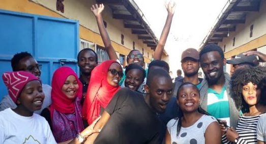

Stories
The Girl From Kacheliba, West Pokot. (Part One)
The Girl from Kacheliba, West Pokot (Part Two)
Course of the Week; B.Sc. Analytical Chemistry
Nurturing Mashujaa, One Act at a Time; The JKUAT Red Cross
JKUAT Mathematics Career Fair 2018!
Course of the Week; BSc. Food Science and Postharvest Technology
Nurturing Mashujaa, One Act at a Time; The JKUAT Red Cross
Seeing the flags of Kenya all around you, being blown beautifully by the gentle wind is a sight to marvel at. On any 20th day of October, the whole 254 is entitled to remember our mashujaa; the men and women who fought for our independence. But to be honest, we never celebrate these holidays because of the meanings attached to them, but just because we get to take a break from our slavery (sorry, work). And so this year most Kenyans termed it a useless holiday since it fell on a weekend, denying them a chance to create a mini weekend. A holiday on a Saturday is like witchcraft to be honest. It’s like remembering you had avocado long after you’ve finished eating. Pointless. But this could not have been further from the truth for us this past Mashujaa weekend. The Red Cross JKUAT Chapter has for years created a new reality to the Mashujaa Day, and we use the time to nurture heroes of today…heroes of tomorrow.
For years now, we, the JKUAT Red Cross members, have made a family at Ezekiel Children’s home. These children have been our heroes, for indeed, they are real heroes. Most of the children at the home have what many uninformed folks will call disabilities, but what we choose to consider special capabilities. Learning about genetic disorders is one thing, but seeing them manifest on innocent children is another. Ezekiel Children’s home is not just any ordinary home, it is specifically for children with Special needs; from autism to cerebral palsy. Most of these conditions are caused by the genetic mix up resulting to birth with communication difficulties and disorder of movement and muscle coordination. These children require extreme special care and efforts to ensure that they get to grow in a conducive environment and still learn despite their special needs.
This Mashujaa weekend, we hoped to live up to our slogan; ‘Hii Chapta Ni Yetu’. Everyone made themselves at home, automatically taking up duties; from the laundry team, to the soap makers and the floor and wheel chair cleaners, not forgetting the important kitchen department who did an excellent job. It was amazing seeing our Red Cross volunteers spending time with the kids, feeding them, talking to them, impacting hope, nurturing heroes… Yes, special in every way is what those kids are.
We got to meet and make so many new friends like Lucy Wanjiru who constantly entertained us with her songs and jokes as we worked. The ever jolly Wanja who enjoyed interactions and being driven around. Wanja also loved interrupting people with her signature random contagious laughter that always eased up the mood by everyone breaking into laughter too. All these children deserve medals for being our mashujaa and for waking up every morning with a smile on their faces despite any circumstance. It gets you wondering, do you appreciate yourself for being a shujaa for successfully facing each day?
Through various activities like gaming night, karaoke night, selling smokies and pin pops; we have always managed to raise enough funds to plan the visit annually and we never disappoint. This has been possible through the unending support of the JKUAT students, Red Cross Thika Branch and other Red Cross university Chapters like UoN and KU.
Red Cross JKUAT Chapter is one of the outstanding clubs in the Institution, and one of the fun ones too; a mixture of brains, adventure and a sense to alleviate human suffering in every possible way they can. Join us every Wednesday at CLB 105 from 5.30 pm to walk this journey together when we can, putting one smile after another on every person we get to meet. We know we can’t possibly solve all the world’s problems, no one can really. But we hope that with every act of kindness, nobility, love, volunteerism, we shall make an impact, and with it, a ripple effect of everything awesome will be nurtured and maintained. Hii Chapta ni Yetu!